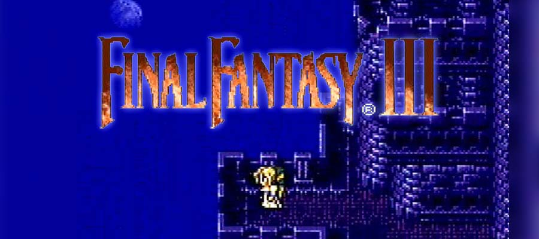

Final Fantasy III

Final Fantasy III (ファイナルファンタジーIII Fainaru Fantajī Surī?) é um jogo eletrônico de RPG desenvolvido e publicado pela Square em 1990 para o Nintendo Entertainment System, sendo o terceiro título principal da série Final Fantasy.
A história segue quatro jovens atraídos para um cristal de luz que lhes dá poderes e os instrui a restaurar o equilíbrio do mundo. Os quatro reconhecem a importância das palavras do cristal, porém não compreendem completamente seu significado, partindo assim em uma aventura para explorar o mundo. O jogo nunca foi lançado fora do Japão até uma recriação ser produzida para o Nintendo DS em 2006, sendo o último Final Fantasy a finalmente receber um lançamento na América do Norte e Europa. Anteriormente houve planos para uma recriação no console portátil WonderSwan Color, como havia acontecido com o primeiro, segundo e quarto jogos da série, porém essa versão enfrentou vários atrasos e acabou cancelada devido o cancelamento prematuro do console